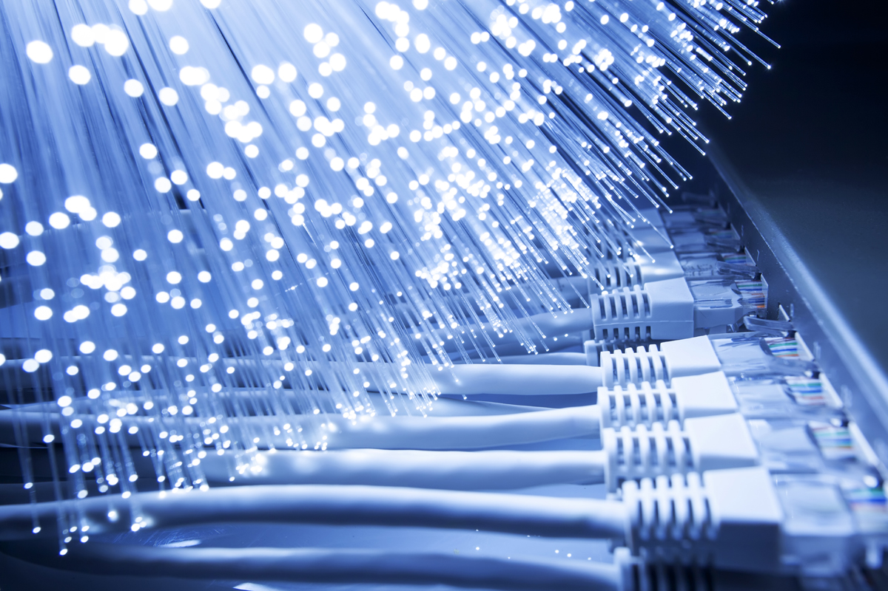

Физический уровень. Основы передачи данных. Сигналы: аналоговые и цифровые сигналы
Канальный уровень
Леция №3
Канальный уровень. Функции канального уровня. Управление доступом к среде передачи данных

Сетевой уровень
Леция №4
Сетевой уровень. Основные задачи сетевого уровня
Транспортный уровень
Леция №5
Транспортный уровень. Задачи транспортного уровня. Установление соединений между приложениями
×
Основные понятия
Что такое сеть?
Сеть – это совокупность взаимосвязанных компьютеров и других устройств, предназначенных для обмена информацией. Сеть позволяет устройствам взаимодействовать друг с другом, обмениваться данными и совместно использовать ресурсы, такие как файлы, программы и оборудование.
Типы сетей
1. Локальная сеть (LAN) – сеть, ограниченная небольшим пространством, таким как офис, дом или учебное заведение. LAN часто использует проводную или беспроводную технологию для подключения устройств.
2. Городская сеть (MAN) – сеть, охватывающая город или его часть. MAN обычно используется для соединения нескольких локальных сетей и предоставляет более высокие скорости передачи данных, чем WAN.
3. Глобальная сеть (WAN) – сеть, простирающаяся на большие расстояния, вплоть до международных границ. Интернет является примером WAN.
Компоненты компьютерных сетей
1. Узлы – отдельные устройства, участвующие в сети, такие как компьютеры, серверы, принтеры и смартфоны.
2. Каналы связи – средства передачи данных между узлами, включая кабели (витая пара, оптоволокно) и беспроводные технологии (Wi-Fi, Bluetooth).
3. Маршрутизаторы – устройства, которые направляют данные между различными сетями, выбирая оптимальный путь для передачи пакетов.
4. Коммутаторы – устройства, которые управляют потоком данных внутри одной сети, позволяя нескольким устройствам одновременно обмениваться информацией.
5. Концентраторы – устройства, которые собирают данные от нескольких узлов и передают их дальше по сети.
Топологии сетей
1. Шина – все устройства подключены к общей линии связи, и информация передается всем устройствам одновременно.
2. Звезда – каждое устройство подключено к центральному узлу (обычно коммутатору), который управляет передачей данных.
3. Кольцо – устройства связаны в замкнутую цепочку, и данные передаются по кругу от одного устройства к другому.
4. Ячеистая топология – каждая пара узлов имеет прямую связь, что повышает надежность и гибкость сети.
История развития компьютерных сетей
Первые компьютерные сети: ARPANET
ARPANET (Advanced Research Projects Agency Network) была создана в 1969 году Министерством обороны США для исследования методов надежной передачи данных между компьютерами. Эта сеть стала предшественником современного Интернета.
Развитие интернет-технологий: TCP/IP, DNS, HTTP
1. TCP/IP – основной набор протоколов, используемых в Интернете. TCP (Transmission Control Protocol) обеспечивает надежную передачу данных, а IP (Internet Protocol) отвечает за адресацию и маршрутизацию.
2. DNS (Domain Name System) – система преобразования доменных имен (например, example.com) в IP-адреса, что упрощает навигацию в Интернете.
3. HTTP (HyperText Transfer Protocol) – протокол, используемый для передачи веб-страниц и других данных в Интернете.
Модели сетевого взаимодействия
Модель OSI (Open Systems Interconnection)
Модель OSI состоит из семи уровней:
1. Физический уровень – передача битов по физическим каналам связи.
2. Канальный уровень – обеспечение надежного обмена данными между двумя соседними узлами.
3. Сетевой уровень – маршрутизация пакетов данных между различными сетями.
4. Транспортный уровень – обеспечение надежной передачи данных между конечными точками.
5. Сеансовый уровень – управление сеансами связи между приложениями.
6. Представительный уровень – преобразование форматов данных для совместимости различных систем.
7. Прикладной уровень – предоставление сервисов пользователям и интерфейс для приложений.
Модель TCP/IP
Модель TCP/IP включает четыре уровня:
1. Уровень приложения – соответствует верхним трем уровням модели OSI.
2. Транспортный уровень – аналогичен транспортному уровню модели OSI.
3. Межсетевой уровень – аналогичен сетевому уровню модели OSI.
4. Уровень доступа к сети – объединяет физический и канальный уровни модели OSI.
Заключение
Изучение компьютерных сетей важно для понимания принципов работы современных информационных систем и Интернета. Это знание необходимо для разработки, эксплуатации и оптимизации сетевых инфраструктур, а также для обеспечения безопасности данных.
Перспективы развития сетевых технологий
Современные технологии продолжают развиваться, включая новые подходы к управлению сетевыми ресурсами, повышению скорости передачи данных и обеспечению безопасности. Среди ключевых направлений развития можно выделить:
Интернет вещей (IoT) – интеграция множества устройств в единую сеть для автоматизации процессов и сбора данных.
Облачные вычисления – хранение и обработка данных в распределенной сетевой инфраструктуре.
Искусственный интеллект и машинное обучение – использование интеллектуальных алгоритмов для анализа и управления сетевым трафиком.
Квантовые коммуникации – разработка новых методов передачи данных с использованием квантовой механики.
Таким образом, изучение компьютерных сетей открывает широкие возможности для профессионального роста и участия в создании будущего цифровой инфраструктуры.
×
Физический уровень
Основы передачи данных
Сигналы: аналоговые и цифровые сигналы
Передача данных осуществляется посредством электрических или оптических сигналов. Эти сигналы могут быть двух типов:
1. Аналоговые сигналы: непрерывно изменяются во времени и имеют бесконечное количество значений. Они используются в традиционных телефонных линиях и радио.
2. Цифровые сигналы: дискретны и принимают только определенные значения (обычно 0 и 1). Цифровая передача данных широко применяется в современных сетях благодаря своей устойчивости к шумам и помехам.
Способы модуляции сигналов
Модуляция – это процесс изменения характеристик несущего сигнала в соответствии с передаваемой информацией. Существуют три основных типа модуляции:
1. Амплитудная модуляция (AM): изменение амплитуды несущей волны пропорционально изменению передаваемого сигнала.
2. Частотная модуляция (FM): изменение частоты несущей волны пропорционально изменению передаваемого сигнала.
3. Фазовая модуляция (PM): изменение фазы несущей волны пропорционально изменению передаваемого сигнала.
Методы мультиплексирования
Мультиплексирование позволяет передавать несколько потоков данных по одному каналу связи. Основные методы мультиплексирования включают:
1. TDM (Time Division Multiplexing): разделение канала по времени, когда каждому потоку данных выделяется определенный временной интервал.
2. FDM (Frequency Division Multiplexing): разделение канала по частоте, когда каждому потоку данных отводится определенная полоса частот.
3. WDM (Wavelength Division Multiplexing): метод, применяемый в волоконно-оптических системах, где разные потоки данных передаются на разных длинах волн света.
Среда передачи данных
Проводные среды
1. Витая пара: состоит из двух изолированных проводов, скрученных вместе. Используется в большинстве локальных сетей (LAN) благодаря низкой стоимости и простоте установки.
2. Коаксиальный кабель: содержит центральный проводник, окруженный слоем изоляции и экранирующим проводником. Применяется в старых сетях и телевизионных системах.
3. Оптоволокно: передает световые импульсы вместо электрических сигналов. Обеспечивает очень высокую скорость передачи данных и устойчивость к электромагнитным помехам.
Беспроводные среды
1. Радиоволны: используются для передачи данных на большие расстояния без необходимости прокладки кабеля. Примеры включают Wi-Fi, сотовые сети и спутниковую связь.
2. Инфракрасное излучение: применяется для ближней связи, например, в пультах дистанционного управления и некоторых беспроводных устройствах.
Кодирование данных
Линейное кодирование
Линейное кодирование преобразует цифровые данные в электрические или оптические сигналы для передачи по линиям связи. Основные схемы линейного кодирования включают:
1. NRZ (Non Return to Zero): сигнал не возвращается к нулю после каждого бита.
2. RZ (Return to Zero): сигнал возвращается к нулю после каждого бита.
3. Manchester: каждый бит представлен изменением уровня сигнала посередине временного интервала.
Блоковое кодирование
Блоковое кодирование группирует биты данных в блоки и добавляет избыточные биты для обнаружения и коррекции ошибок. Примеры блокового кодирования:
1. HDB3 (High-Density Bipolar 3): используется в системах с импульсно-кодовой модуляцией (PCM).
2. AMI (Alternate Mark Inversion): чередующиеся положительные и отрицательные импульсы для представления единиц.
Оборудование физического уровня
Кабельные системы
1. Типы кабелей: витая пара, коаксиальный кабель, оптоволокно.
2. Разъемы: RJ-45 (для витой пары), BNC (для коаксиального кабеля), SC, LC, ST (для оптоволокна).
3. Стандарты: категории кабелей (Cat5e, Cat6 и др.), спецификации ANSI/TIA/EIA.
Устройства доступа к сети
1. Модемы: преобразуют цифровые данные в аналоговые сигналы и обратно для передачи по телефонным линиям.
2. Сетевые карты: обеспечивают подключение компьютера к сети, обрабатывают поступающие и исходящие данные.
Заключение
Роль физического уровня в передаче данных
Физический уровень играет ключевую роль в процессе передачи данных, определяя способы кодирования, модуляции и мультиплексирования сигналов, а также характеристики среды передачи. От эффективности работы физического уровня зависит надежность и скорость передачи данных.
Современные тенденции в развитии физических сред передачи данных
Современные тенденции включают дальнейшее развитие оптоволоконных технологий, увеличение пропускной способности беспроводных сетей (например, 5G), а также внедрение новых стандартов и протоколов для повышения энергоэффективности и снижения задержек.
×
Канальный уровень
Функции канального уровня
Канальный уровень модели OSI отвечает за передачу данных между узлами сети. Его основными функциями являются:
1. Управление доступом к среде передачи данных. Эта функция определяет правила, согласно которым узлы получают право передавать данные по общей физической среде.
2. Обнаружение и исправление ошибок. Канальный уровень обеспечивает целостность передаваемых данных путем обнаружения и коррекции возможных ошибок.
3. Форматирование кадров данных. Данные передаются в виде кадров, и канальный уровень отвечает за формирование этих кадров, добавляя необходимую служебную информацию.
Управление доступом к среде передачи данных
Существует несколько методов управления доступом к среде передачи данных:
1. Метод случайного доступа (CSMA). Узлы пытаются передать данные, если среда свободна. Если возникает коллизия, передача откладывается на случайный промежуток времени.
2. Методы с приоритетом. Некоторые узлы имеют преимущество перед другими при доступе к среде.
3. Методы с передачей маркера. Право на передачу передается узлу с маркером, который перемещается по кольцевой топологии.
Обнаружение и исправление ошибок
Канальный уровень использует контрольные суммы и коды коррекции ошибок для проверки целостности данных. Наиболее распространенными методами являются:
1. CRC (Cyclic Redundancy Check). Используется для обнаружения ошибок в передаваемом блоке данных.
2. ARQ (Automatic Repeat Request). Метод, при котором отправитель запрашивает повторную передачу поврежденных блоков данных.
Форматирование кадров данных
Каждый кадр состоит из заголовка, полезной нагрузки и трейлера. Заголовок содержит адрес получателя и отправителя, длину кадра и другую служебную информацию. Полезная нагрузка – это сами данные, а трейлер содержит контрольную сумму для проверки целостности данных.
Протоколы канального уровня
Рассмотрим некоторые популярные протоколы канального уровня:
Ethernet: формат кадра, методы доступа к среде (CSMA/CD)
1. Формат кадра Ethernet. Кадр Ethernet содержит MAC-адреса источника и назначения, тип протокола верхнего уровня, полезную нагрузку и контрольную сумму.
2. CSMA/CD (Carrier Sense Multiple Access with Collision Detection). Узлы слушают среду передачи данных и передают кадры, если среда свободна. Если происходит коллизия, передача откладывается.
Token Ring: принцип работы, преимущества и недостатки
1. Принцип работы. В сетях Token Ring используется маркер, который передается по кольцевидной топологии. Узел может передавать данные только тогда, когда у него есть маркер.
2. Преимущества. Высокая надежность и предсказуемость задержки передачи данных.
3. Недостатки. Чувствительность к отказам узлов и сложность настройки.
Wi-Fi: стандарты IEEE 802.11, методы защиты информации
1. Стандарты IEEE 802.11. Включают в себя различные версии Wi-Fi, такие как 802.11a/b/g/n/ac/ax.
2. Методы защиты информации. WEP, WPA, WPA2 и WPA3 обеспечивают шифрование и аутентификацию в беспроводных сетях.
Адресация на канальном уровне
На канальном уровне используется MAC-адрес для идентификации устройств в локальной сети.
MAC-адрес: структура, назначение
1. Структура MAC-адреса. MAC-адрес состоит из 48 бит и уникален для каждого сетевого устройства.
2. Назначение. MAC-адрес используется для адресации на канальном уровне и позволяет устройствам находить друг друга в локальной сети.
ARP (Address Resolution Protocol): принципы работы, использование
1. Принципы работы. ARP используется для преобразования IP-адресов в MAC-адреса.
2. Использование. Когда устройству нужно отправить пакет другому устройству в той же подсети, оно использует ARP для получения MAC-адреса по известному IP-адресу.
Коммутируемые сети
Коммутация пакетов играет ключевую роль в современных сетях.
Принципы коммутации пакетов
1. Коммутация пакетов. Пакеты передаются от одного узла к другому на основе таблиц коммутации.
2. аблицы коммутации. Содержат информацию о маршруте передачи пакетов и динамически обновляются.
Таблицы коммутации, динамическое обучение
1. Динамическое обучение. Коммутаторы автоматически заполняют таблицы коммутации на основе поступающей информации.
Заключение
Канальный уровень играет важную роль в обеспечении надежной передачи данных в сетях. Он предоставляет механизмы управления доступом к среде, обнаружение и исправление ошибок, а также форматирование кадров данных. Современные технологии продолжают развиваться, предлагая новые способы повышения производительности и безопасности сетей.
Будущее развитие протоколов канального уровня
Прогресс в области канальных уровней направлен на увеличение скорости передачи данных, улучшение методов защиты информации и снижение задержек. Новые стандарты и технологии будут продолжать появляться, отвечая на вызовы растущих требований к сетевым инфраструктурам.
×
Сетевой уровень
Основные задачи сетевого уровня
Сетевой уровень модели OSI отвечает за доставку данных между разными сетями. Его основные задачи включают:
1. Маршрутизация. Определение наилучшего маршрута для передачи данных между источниками и приемниками.
2. Логическая адресация. Назначение уникальных логических адресов (например, IP-адресов) каждому устройству в сети.
3. Фрагментация и сборка пакетов. Разделение больших пакетов на меньшие фрагменты для передачи по различным физическим средам и последующая сборка на стороне получателя.
Маршрутизация: выбор оптимального пути передачи данных
Маршрутизация – это процесс выбора наилучшего пути для передачи данных от источника к получателю. Существует два основных типа маршрутов:
1. Статические маршруты. Настраиваются вручную администратором сети и остаются неизменными до следующей ручной корректировки.
2. Динамические маршруты. Автоматически выбираются на основе текущей топологии сети и состояния каналов связи.
Логическая адресация: IP-адреса, маски подсетей
Каждое устройство в сети имеет уникальный IP-адрес, состоящий из двух частей: номера сети и номера хоста. Маска подсети используется для определения границы между этими частями.
Фрагментация и сборка пакетов
Поскольку разные физические среды могут иметь разные максимальные размеры пакета, сетевой уровень разбивает большие пакеты на фрагменты для передачи и собирает их на стороне получателя.
Протоколы сетевого уровня
Основными протоколами сетевого уровня являются:
IPv4: структура заголовка, классы адресов, CIDR
1. Структура заголовка IPv4. Заголовок IPv4 содержит версию протокола, длину заголовка, тип сервиса, общую длину пакета, идентификацию фрагмента, время жизни, протокол верхнего уровня, контрольную сумму и IP-адреса источника и назначения.
2. Классы адресов. Существуют пять классов адресов IPv4: A, B, C, D и E.
3. CIDR (Classless Inter-Domain Routing). Позволяет гибкое деление адресного пространства без привязки к классовой структуре.
IPv6: отличия от IPv4, преимущества, перспективы внедрения
1. Отличия от IPv4. IPv6 имеет больший размер адреса (128 бит вместо 32), улучшенную поддержку мобильности и встроенную поддержку безопасности.
2. Преимущества. Большее количество доступных адресов, улучшенная масштабируемость и поддержка мультимедиа-приложений.
3. Перспективы внедрения. Постепенное внедрение IPv6 продолжается, хотя переход требует значительных усилий и инвестиций.
ICMP (Internet Control Message Protocol): диагностика сети, сообщения об ошибках
ICMP используется для диагностики сети и отправки сообщений об ошибках. Примеры сообщений ICMP включают:
1. Настройка. Статические маршруты настраиваются вручную и требуют регулярного обновления при изменении топологии сети.
2. Применение. Используются в небольших сетях или там, где требуется высокая степень контроля над маршрутизацией.
1. Алгоритмы маршрутизации. RIP, OSPF и BGP являются примерами динамических протоколов маршрутизации.
2. RIP (Routing Information Protocol). Простой векторно-дистанционный алгоритм, основанный на количестве переходов.
3. OSPF (Open Shortest Path First). Алгоритм состояния канала, использующий алгоритм Дейкстры для нахождения кратчайших путей.
4. BGP (Border Gateway Protocol). Внешний шлюзовый протокол, используемый для маршрутизации между автономными системами.
Мультикастинг и широковещание
Мультикастинг и широковещательная рассылка позволяют отправлять данные нескольким или всем пользователям одновременно.
Механизмы мультикаста: IGMP, PIM
1. IGMP (Internet Group Management Protocol). Управляет членством в группах многоадресной рассылки.
2. PIM (Protocol Independent Multicast). Независимо от протокола маршрутизации механизм для поддержки многоадресной рассылки.
Широковещательные рассылки: ограничения и применения
1. Ограничения. Широковещательные рассылки создают большую нагрузку на сеть и могут привести к перегрузкам.
2. Применения. Используются для доставки данных большому количеству пользователей, например, в корпоративных сетях или системах оповещения.
Заключение
Сетевой уровень играет ключевую роль в организации глобальной сети Интернет, обеспечивая связь между различными сетевыми сегментами. Однако существуют проблемы, связанные с устареванием протоколов, нехваткой адресного пространства и безопасностью. Решение этих проблем требует внедрения новых технологий и подходов, таких как IPv6 и усовершенствованная защита данных.
Проблемы и вызовы, связанные с развитием сетевого уровня
Основные вызовы включают:
1. Переход на IPv6. Необходимость постепенной миграции на новый протокол, поддерживающий большее количество адресов и улучшенные функции безопасности.
2. Безопасность. Постоянные угрозы кибератак и необходимость защиты данных в процессе передачи.
3. Масштабируемость. Обеспечение работы сети при увеличении числа подключенных устройств и объемов трафика.
Решение этих вызовов требует активного исследования и внедрения инновационных технологий, способных адаптироваться к новым условиям и угрозам.
×
Транспортный уровень
Введение
Транспортный уровень является одним из ключевых уровней модели OSI (Open Systems Interconnection), который отвечает за передачу данных между процессами, работающими на разных хостах сети. Он обеспечивает надежную доставку данных, контроль ошибок и управление потоком информации. Сегодня мы рассмотрим задачи транспортного уровня, протоколы, используемые на этом уровне, а также механизмы управления качеством обслуживания (QoS).
Задачи транспортного уровня
Транспортный уровень выполняет несколько важных функций:
1. Установление соединений между приложениями Транспортный уровень позволяет двум приложениям устанавливать логическое соединение для обмена данными. Это может происходить через различные типы соединений, такие как потоки или дейтаграммы.
2. Контроль потока данных Для предотвращения перегрузки приемника отправителем транспортный уровень реализует механизмы контроля скорости передачи данных. Например, если одна сторона передает данные слишком быстро, другая сторона может запросить замедление передачи.
3. Обеспечение надежной доставки данных Важной задачей транспортного уровня является обеспечение того, чтобы все переданные данные были доставлены без потерь и в правильном порядке. Если какие-то пакеты теряются или повреждаются при передаче, транспортный уровень занимается их восстановлением.
Протоколы транспортного уровня
На транспортном уровне используются два основных протокола: TCP и UDP.
TCP (Transmission Control Protocol)
TCP – это надежный протокол с установлением соединения. Основные характеристики TCP включают:
1. Трехэтапное установление соединения: Процесс установления соединения начинается с отправки SYN-пакета от клиента к серверу, затем сервера отправляет ответ ACK-SYN, после чего клиент подтверждает соединение посылкой пакета ACK.
2. Контроль целостности данных: TCP использует механизм подтверждения приема пакетов (ACK). Если пакет не был подтвержден, он будет отправлен повторно до тех пор, пока не достигнет получателя.
3. Управление потоком данных: TCP поддерживает механизмы управления скоростью передачи данных, такие как скользящее окно, которое регулирует количество данных, передаваемых за раз.
UDP (User Datagram Protocol)
UDP – это ненадежный протокол без установления соединения. Его основные особенности:
1. Отсутствие гарантированной доставки: UDP не гарантирует, что данные будут доставлены корректно и в нужном порядке. Это делает его менее надежным, чем TCP, но зато более быстрым.
2. Простота реализации: Отсутствие необходимости в установлении соединения и подтверждении приема пакетов упрощает использование UDP.
3. Использование в специфических случаях: UDP часто используется в приложениях, где скорость важнее надежности, таких как потоковая передача видео или аудио, игры в реальном времени.
Порты и сокеты
Для идентификации приложений, работающих на одном компьютере, используются порты. Каждый порт имеет уникальный номер, который помогает различать разные приложения и сервисы.
Назначение портов
1. Хорошо известные порты: Эти порты зарезервированы для стандартных сервисов, таких как HTTP (порт 80), FTP (порт 21) и SSH (порт 22).
2. Зарегистрированные порты: Они могут использоваться различными приложениями, но обычно назначаются по соглашению, например, порт 8080 для веб-серверов.
Сокеты
Сокет представляет собой конечную точку сетевого соединения. Он создается для каждого соединения и управляет передачей данных между двумя приложениями. Операции с сокетом включают:
1. Создание сокета
2. Установление соединения
3. Передачу и получение данных
4. Закрытие соединения
Качество обслуживания (QoS)
Качество обслуживания (Quality of Service, QoS) – это набор механизмов, обеспечивающих требуемое качество передачи данных в сети. QoS особенно важен для мультимедийных приложений, таких как видеоконференции и потоковые трансляции, где задержка и потеря пакетов могут существенно повлиять на пользовательский опыт.
Механизмы обеспечения QoS
1. Приоритетные очереди: Пакеты распределяются по разным очередям в зависимости от их приоритета. Высокоприоритетные пакеты обрабатываются быстрее.
2. Резервирование ресурсов: Некоторые ресурсы сети могут быть зарезервированы для определенных типов трафика, чтобы гарантировать их своевременную обработку.
Применение QoS в мультимедийных приложениях
В мультимедийных приложениях важно обеспечить минимальную задержку и потери пакетов. QoS-механизмы позволяют добиться этого путем выделения приоритетного канала для передачи аудио- и видеоданных.
Заключение
Транспортный уровень играет ключевую роль в обеспечении надежного и качественного взаимодействия между приложениями в сети. Развитие технологий и увеличение требований к качеству услуг приводят к совершенствованию транспортных протоколов и механизмов QoS. В будущем можно ожидать дальнейшего улучшения этих технологий, что позволит создавать еще более надежные и эффективные сетевые решения.